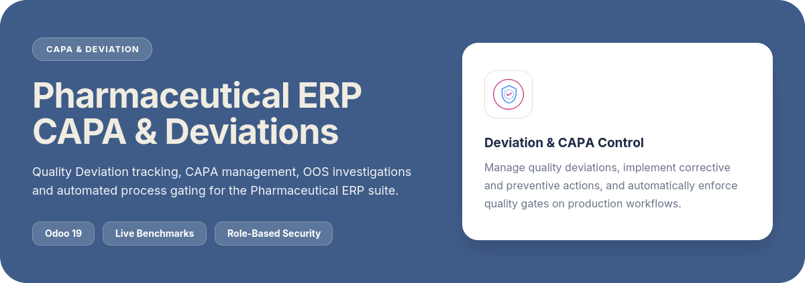
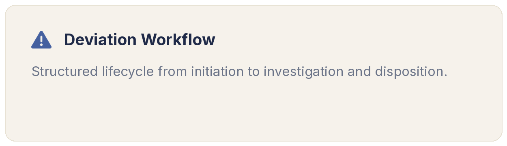
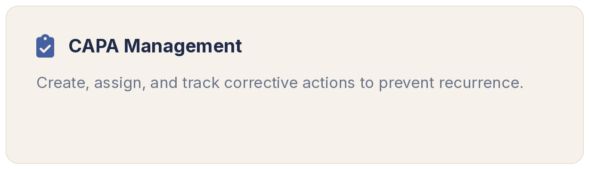
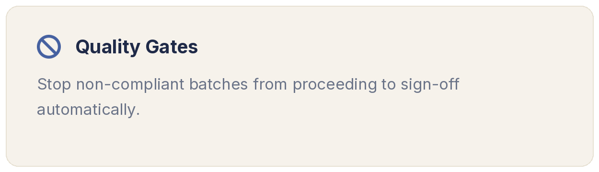
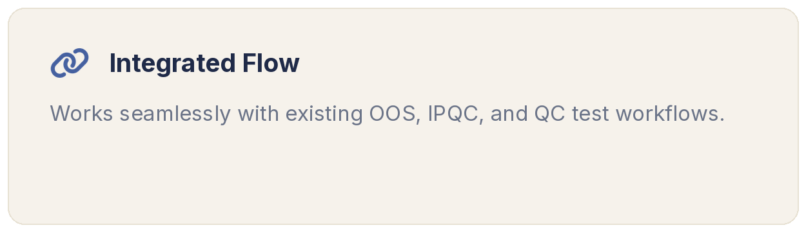

|
|

The Core Pillars
Why Pharmaceutical ERP?
Quality Deviation TrackingTrack and classify deviations with dedicated investigation deadlines and disposition workflows. |
Corrective & Preventive ActionsTrace every CAPA directly back to its originating deviation for full quality accountability. |
Automated CouplingsOOS investigations and IPQC failures automatically raise and link to deviations in real-time. |
Process GatingBlock BMR completions and QC test order approvals while critical deviations or CAPAs remain open. |
 |
 |
 |
 |
Release 19.0.1.0.0
10th August, 2026 - Add: Initial commit
The Ecosystem
Explore the Pharmaceutical ERP Suite
|
Pharmaceutical Base |
Vendor Qualification |
Batch & Lot Traceability |
SOP & Training |